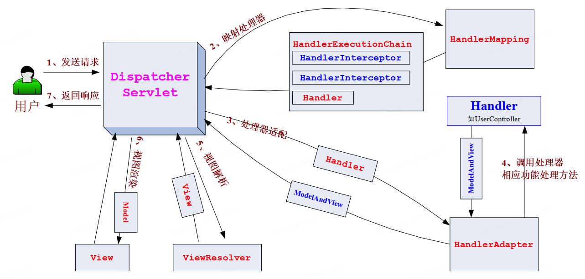
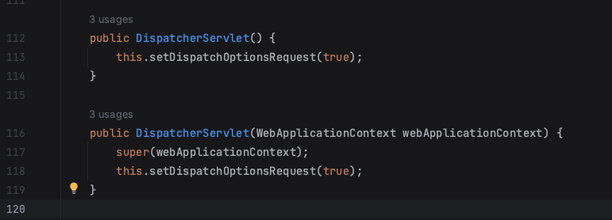
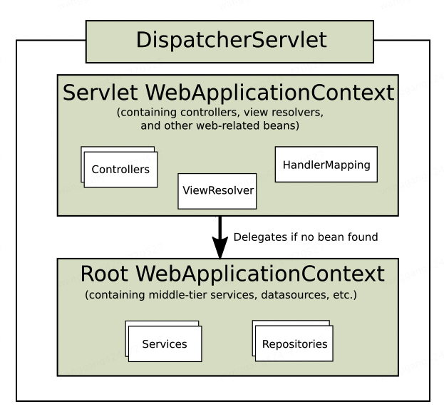
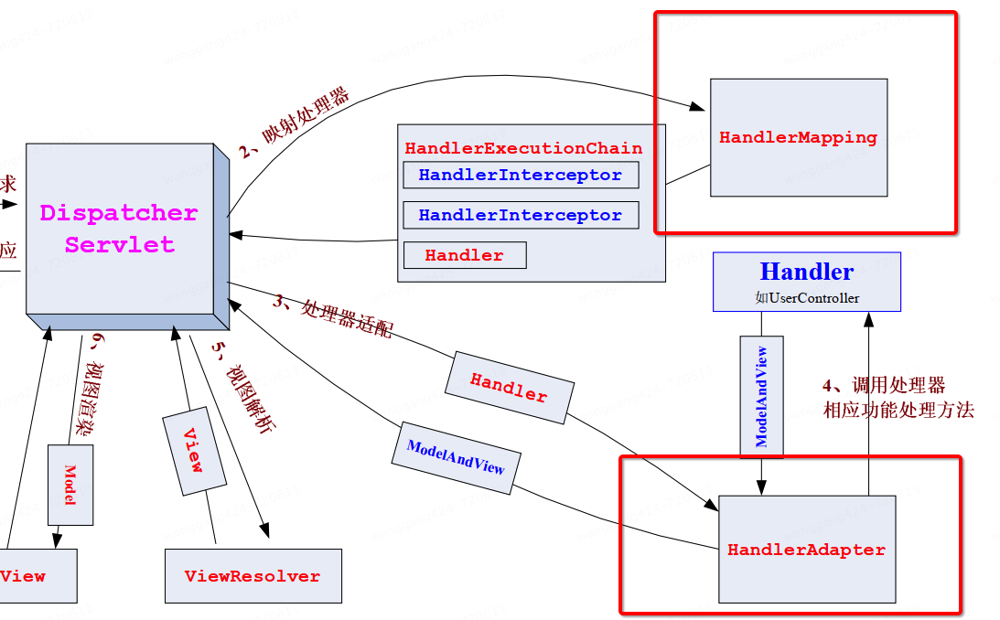
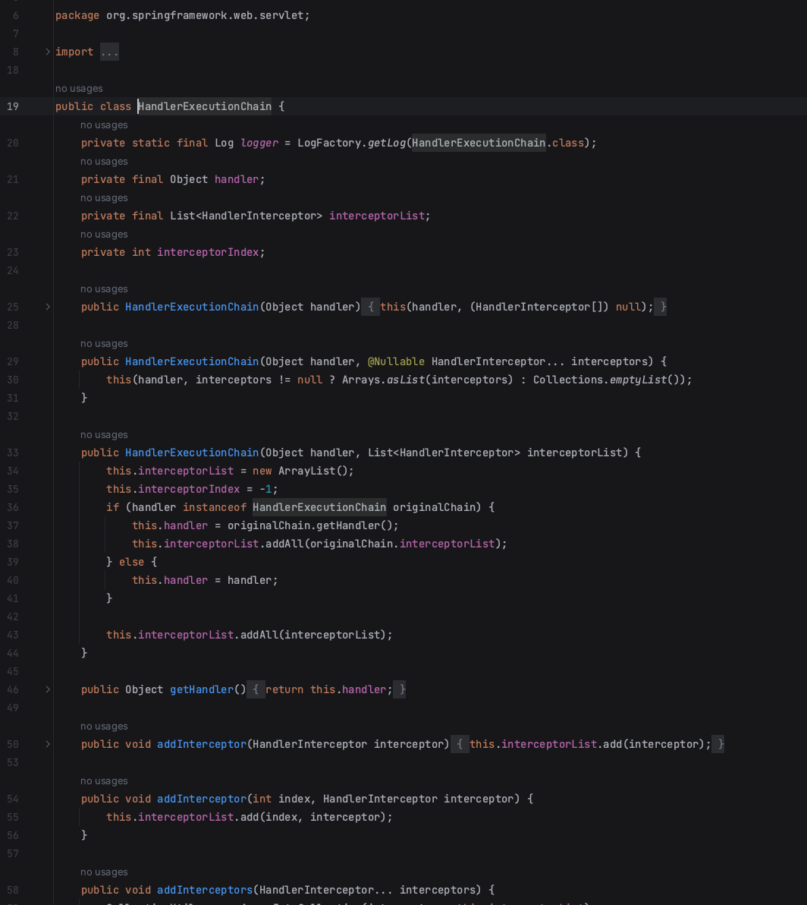
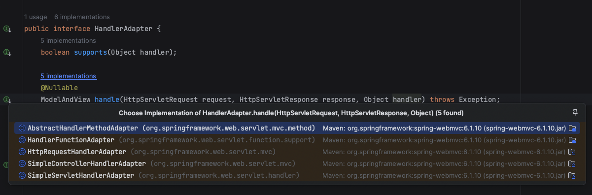
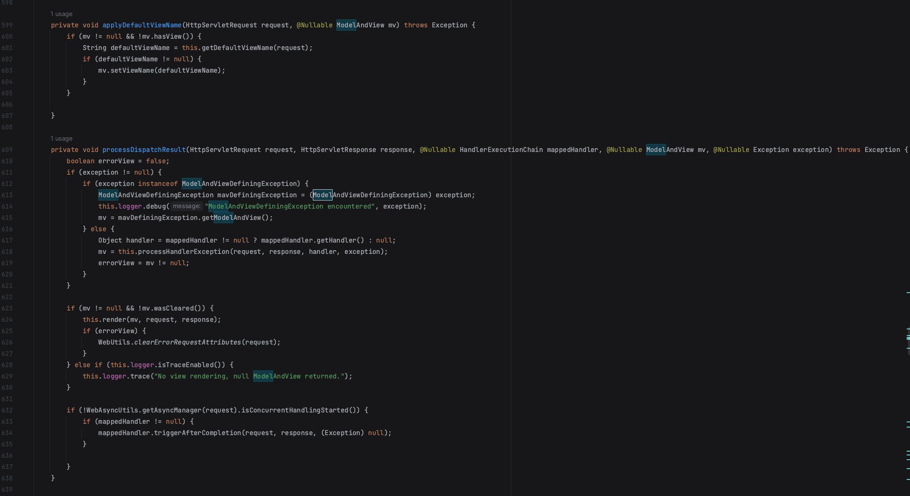
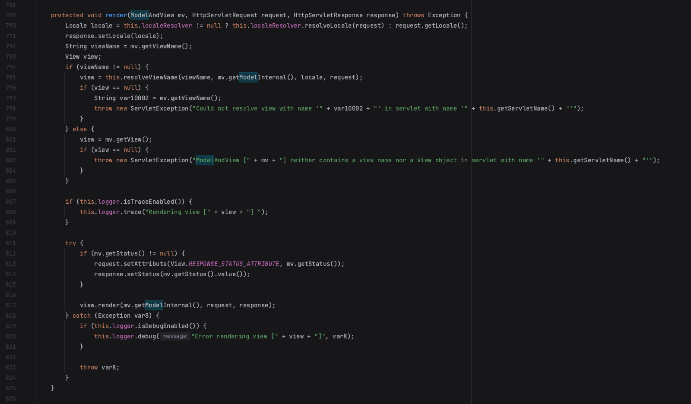

JavaWeb开发进阶SpringMVC的DispatcherServlet¶

DispatcherServlet简介¶
DispatcherServlet是Spring MVC框架的核心组件，充当前端控制器（Front
Controller）的角色。它负责接收所有的HTTP请求，并将它们分发给适当的处理器（控制器）。DispatcherServlet是整个Spring
MVC应用程序的入口点，管理请求的整个生命周期。

通过源码查看DispatcherServlet定义：
public class DispatcherServlet extends FrameworkServlet
public abstract class FrameworkServlet extends HttpServletBean implements ApplicationContextAware
public abstract class HttpServletBean extends HttpServlet implements EnvironmentCapable, EnvironmentAware
DispatcherServlet继承了FrameworkServlet，继承了HttpServletBean，继承了HttpServlet。HttpServlet来自jakarta.servlet.http.HttpServlet，也就是新版Servlet：
<dependency>
<groupId>jakarta.servlet</groupId>
<artifactId>jakarta.servlet-api</artifactId>
<version>6.1.0</version>
<scope>provided</scope>
</dependency>
果然，Spring MVC是基于Servlet的！
DispatcherServlet注册¶
DispatcherServlet是个Servlet，需要注册后才能使用。有3种注册方式：web.xml、Spring MVC、Spring Boot
① web.xml
<web-app>
<listener>
<listener-class>org.springframework.web.context.ContextLoaderListener</listener-class>
</listener>
<context-param>
<param-name>contextConfigLocation</param-name>
<param-value>/WEB-INF/app-context.xml</param-value>
</context-param>
<servlet>
<servlet-name>app</servlet-name>
<servlet-class>org.springframework.web.servlet.DispatcherServlet</servlet-class>
<init-param>
<param-name>contextConfigLocation</param-name>
<param-value></param-value>
</init-param>
<load-on-startup>1</load-on-startup>
</servlet>
<servlet-mapping>
<servlet-name>app</servlet-name>
<url-pattern>/app/*</url-pattern>
</servlet-mapping>
</web-app>
② Spring MVC
public class MyWebApplicationInitializer implements WebApplicationInitializer {
@Override
public void onStartup(ServletContext servletContext) {
// Load Spring web application configuration
AnnotationConfigWebApplicationContext context = new AnnotationConfigWebApplicationContext();
context.register(AppConfig.class);
// Create and register the DispatcherServlet
DispatcherServlet servlet = new DispatcherServlet(context);
ServletRegistration.Dynamic registration = servletContext.addServlet("app", servlet);
registration.setLoadOnStartup(1);
registration.addMapping("/app/*");
}
}
③ Spring Boot
import org.springframework.boot.SpringApplication;
import org.springframework.boot.autoconfigure.SpringBootApplication;
import org.springframework.boot.web.servlet.ServletRegistrationBean;
import org.springframework.context.annotation.Bean;
import org.springframework.web.context.WebApplicationContext;
import org.springframework.web.context.support.AnnotationConfigWebApplicationContext;
import org.springframework.web.servlet.DispatcherServlet;
@SpringBootApplication
public class MyApplication {
public static void main(String[] args) {
SpringApplication.run(MyApplication.class, args);
}
@Bean
public ServletRegistrationBean<DispatcherServlet> dispatcherServletRegistration(WebApplicationContext context) {
AnnotationConfigWebApplicationContext webContext = new AnnotationConfigWebApplicationContext();
webContext.register(AppConfig.class);
DispatcherServlet dispatcherServlet = new DispatcherServlet(webContext);
ServletRegistrationBean<DispatcherServlet> registration = new ServletRegistrationBean<>(dispatcherServlet, "/app/*");
registration.setName("app");
registration.setLoadOnStartup(1);
return registration;
}
}
Spring Boot通常会自动配置DispatcherServlet。Spring
Boot的自动配置机制会根据应用程序的依赖和配置自动创建和注册DispatcherServlet，并将其映射到根路径（/）。这使得开发者无需手动配置DispatcherServlet，从而简化了开发过程。Spring
Boot通过spring-boot-starter-web依赖自动配置DispatcherServlet。当你在项目中引入这个依赖时，Spring
Boot会自动扫描并配置Web相关的组件，包括DispatcherServlet。
Context层级¶

DispatcherServlet的构造方法，参数是WebApplicationContext。WebApplicationContext定义如下：
package org.springframework.web.context;
import jakarta.servlet.ServletContext;
import org.springframework.context.ApplicationContext;
import org.springframework.lang.Nullable;
public interface WebApplicationContext extends ApplicationContext {
String ROOT_WEB_APPLICATION_CONTEXT_ATTRIBUTE = WebApplicationContext.class.getName() + ".ROOT";
String SCOPE_REQUEST = "request";
String SCOPE_SESSION = "session";
String SCOPE_APPLICATION = "application";
String SERVLET_CONTEXT_BEAN_NAME = "servletContext";
String CONTEXT_PARAMETERS_BEAN_NAME = "contextParameters";
String CONTEXT_ATTRIBUTES_BEAN_NAME = "contextAttributes";
@Nullable
ServletContext getServletContext();
}
有个getServletContext方法，返回了熟悉的ServletContext，来自jakarta.servlet.ServletContext。没错，Spring
MVC的底层确实是Servlet！
WebApplicationContext继承自ApplicationContext，ApplicationContext的定义如下：
package org.springframework.context;
import org.springframework.beans.factory.HierarchicalBeanFactory;
import org.springframework.beans.factory.ListableBeanFactory;
import org.springframework.beans.factory.config.AutowireCapableBeanFactory;
import org.springframework.core.env.EnvironmentCapable;
import org.springframework.core.io.support.ResourcePatternResolver;
import org.springframework.lang.Nullable;
public interface ApplicationContext extends EnvironmentCapable, ListableBeanFactory, HierarchicalBeanFactory, MessageSource, ApplicationEventPublisher, ResourcePatternResolver {
@Nullable
String getId();
String getApplicationName();
String getDisplayName();
long getStartupDate();
@Nullable
ApplicationContext getParent();
AutowireCapableBeanFactory getAutowireCapableBeanFactory() throws IllegalStateException;
}
在使用框架时，Context可以是层级结构的：

Servlet
WebApplicationContext是特定于某个DispatcherServlet实例的上下文，包含特定于该Servlet的Bean。Root
WebApplicationContext是整个Web应用程序的根上下文，包含共享的基础设施Bean。多个DispatcherServlet实例之间共享一个Root
WebApplicationContext，每个实例都有自己的Servlet WebApplicationContext。
Context也可以是单一的，如果只需要一个Context，那么配置Root WebApplicationContext即可。
特殊Bean类型¶
在Spring框架中，Bean是Spring IoC容器管理的对象。特殊Bean通常指那些实现了特定接口或继承了特定类的Bean，这些接口或类定义了某些框架契约。
HandlerMapping
HandlerMapping是Spring MVC中用于将请求URL映射到相应处理器（Controller）的方法。它的主要职责是根据请求找到合适的处理器。常见实现：
RequestMappingHandlerMapping：基于注解的映射，如@RequestMappingSimpleUrlHandlerMapping：基于URL路径的映射HandlerAdapter
HandlerAdapter是用于执行处理器（Controller）的方法。它的主要职责是调用处理器并返回一个
ModelAndView对象。常见实现：RequestMappingHandlerAdapter：处理基于注解的控制器方法SimpleControllerHandlerAdapter：处理实现了Controller接口的控制器HandlerExceptionResolver
HandlerExceptionResolver用于处理在处理请求过程中抛出的异常。它的主要职责是将异常转换为适当的视图或响应。常见实现：
ExceptionHandlerExceptionResolver：处理使用@ExceptionHandler注解的方法ResponseStatusExceptionResolver：处理使用@ResponseStatus注解的方法ViewResolver
ViewResolver用于将逻辑视图名称解析为实际的视图对象。它的主要职责是找到合适的视图来渲染模型数据。常见实现：
InternalResourceViewResolver：解析JSP视图ThymeleafViewResolver：解析Thymeleaf视图LocaleResolver, LocaleContextResolver
LocaleResolver和LocaleContextResolver用于解析和设置请求的区域信息（Locale）。常见实现：
AcceptHeaderLocaleResolver：基于请求头的区域信息CookieLocaleResolver：基于Cookie的区域信息TimeZoneAwareLocaleContextResolver：支持时间区域的解析，LocaleContextResolver：扩展了LocaleResolverThemeResolver
ThemeResolver用于解析和设置请求的主题信息。主题通常用于定义应用的外观和感觉。常见实现：
FixedThemeResolver：使用固定的主题CookieThemeResolver：基于Cookie的主题解析MultipartResolver
MultipartResolver用于处理文件上传请求。它的主要职责是将多部分请求解析为文件和表单字段。常见实现：
CommonsMultipartResolver：基于Apache Commons FileUploadStandardServletMultipartResolver：基于Servlet 3.0的文件上传FlashMapManager
FlashMapManager用于在重定向请求之间传递临时数据。它的主要职责是管理Flash属性。常见实现：
SessionFlashMapManager：基于HTTP会话的FlashMap管理
关于HandlerMapping和HandlerAdapter
查看它们的源码：
package org.springframework.web.servlet;
import jakarta.servlet.http.HttpServletRequest;
import org.springframework.lang.Nullable;
public interface HandlerMapping {
String BEST_MATCHING_HANDLER_ATTRIBUTE = HandlerMapping.class.getName() + ".bestMatchingHandler";
/** @deprecated */
@Deprecated
String LOOKUP_PATH = HandlerMapping.class.getName() + ".lookupPath";
String PATH_WITHIN_HANDLER_MAPPING_ATTRIBUTE = HandlerMapping.class.getName() + ".pathWithinHandlerMapping";
String BEST_MATCHING_PATTERN_ATTRIBUTE = HandlerMapping.class.getName() + ".bestMatchingPattern";
String INTROSPECT_TYPE_LEVEL_MAPPING = HandlerMapping.class.getName() + ".introspectTypeLevelMapping";
String URI_TEMPLATE_VARIABLES_ATTRIBUTE = HandlerMapping.class.getName() + ".uriTemplateVariables";
String MATRIX_VARIABLES_ATTRIBUTE = HandlerMapping.class.getName() + ".matrixVariables";
String PRODUCIBLE_MEDIA_TYPES_ATTRIBUTE = HandlerMapping.class.getName() + ".producibleMediaTypes";
default boolean usesPathPatterns() {
return false;
}
@Nullable
HandlerExecutionChain getHandler(HttpServletRequest request) throws Exception;
}
package org.springframework.web.servlet;
import jakarta.servlet.http.HttpServletRequest;
import jakarta.servlet.http.HttpServletResponse;
import org.springframework.lang.Nullable;
public interface HandlerAdapter {
boolean supports(Object handler);
@Nullable
ModelAndView handle(HttpServletRequest request, HttpServletResponse response, Object handler) throws Exception;
/** @deprecated */
@Deprecated
long getLastModified(HttpServletRequest request, Object handler);
}
结合这个图来理解：

先看HandlerMapping这块，DispatcherServlet接收到请求，调用HandlerMapping来查找合适的处理器，HandlerMapping返回处理器及其相关的拦截器信息。
getHandler方法返回了HandlerExecutionChain类，包含了Handler和HandlerInterceptor：

再看HandlerAdapter这块，DispatcherServlet调用HandlerAdapter来执行处理器的方法，HandlerAdapter调用处理器的方法并返回ModelAndView对象，DispatcherServlet根据ModelAndView对象来选择视图进行渲染。handle方法入参request、response、handler，返回ModelAndView：

其中SimpleControllerHandlerAdapter类的源码：
package org.springframework.web.servlet.mvc;
import jakarta.servlet.http.HttpServletRequest;
import jakarta.servlet.http.HttpServletResponse;
import org.springframework.lang.Nullable;
import org.springframework.web.servlet.HandlerAdapter;
import org.springframework.web.servlet.ModelAndView;
public class SimpleControllerHandlerAdapter implements HandlerAdapter {
public SimpleControllerHandlerAdapter() {
}
public boolean supports(Object handler) {
return handler instanceof Controller;
}
@Nullable
public ModelAndView handle(HttpServletRequest request, HttpServletResponse response, Object handler) throws Exception {
return ((Controller)handler).handleRequest(request, response);
}
public long getLastModified(HttpServletRequest request, Object handler) {
if (handler instanceof LastModified lastModified) {
return lastModified.getLastModified(request);
} else {
return -1L;
}
}
}
DispatcherServlet有几个方法入参为ModelAndView，选择视图进行渲染：


感兴趣可以到源码跟踪细节：
<dependency>
<groupId>org.springframework</groupId>
<artifactId>spring-webmvc</artifactId>
<version>6.1.10</version>
</dependency>
它们分别应用了不同的设计模式：
HandlerMapping应用了策略模式（Strategy Pattern）
HandlerMapping接口定义了查找处理器的策略，而具体的实现类（如RequestMappingHandlerMapping、SimpleUrlHandlerMapping等）则提供了不同的查找策略。这样，Spring MVC可以根据配置或需求选择不同的HandlerMapping实现，而不需要修改核心代码。HandlerAdapter应用了适配器模式（Adapter Pattern）
HandlerAdapter接口定义了执行处理器的方法，而具体的实现类（如RequestMappingHandlerAdapter、SimpleControllerHandlerAdapter等）则适配了不同类型的处理器。这样，Spring MVC可以通过统一的接口来调用不同类型的处理器，而不需要关心处理器的具体实现细节。
123
参考资料：
https://docs.spring.io/spring-framework/reference/web/webmvc/mvc-servlet.html
ChatGPT
《跟开涛学SpringMVC》